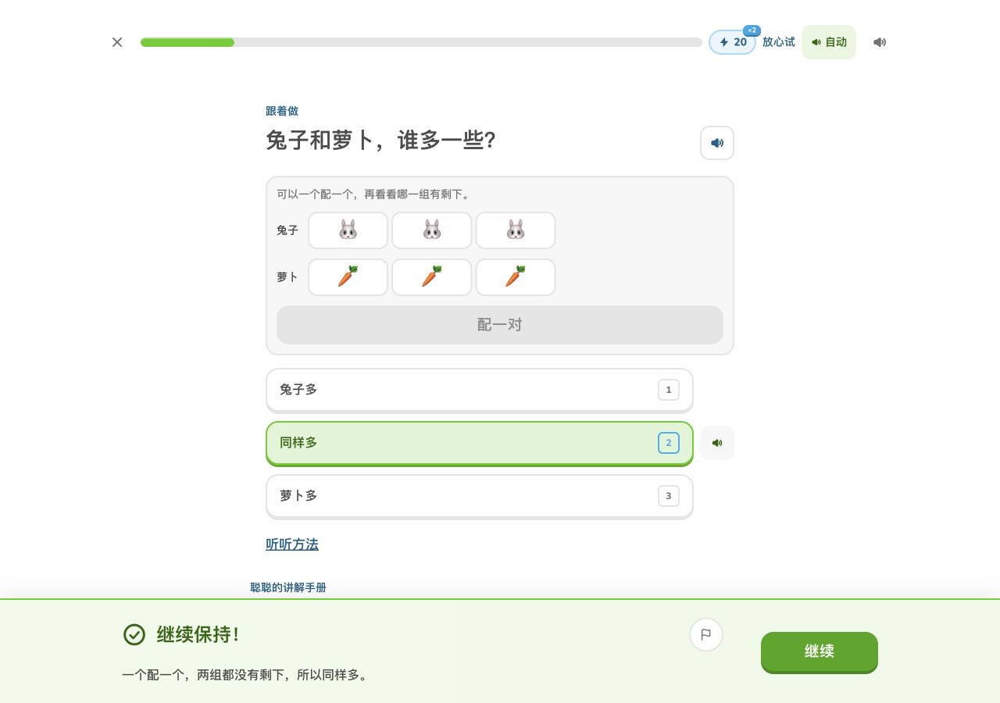
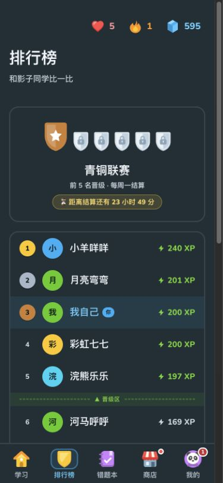

多邻国 Web 逐页对照审查
2026-10-18 · 根据实际网页与用户截图继续修改
本轮从多邻国公开 Web 的 Learn、Lesson、Leaderboards、Quests、Shop、Preferences、Guidebook 出发，查看真实界面与选中/正确/未解锁状态，再检查我们的11类页面。对比基线为上一轮结束时的13bb715。
本轮评价顺序：先看实际视觉与交互是否符合参照，再用测试确认行为。下面是原始浏览器截图，没有像素修图。手机视口390×844、桌面1280×900；滚动条会占用部分宽度。测试记录跨过本地午夜，宝石、任务和学习进度可能不同。
先看你指出的排行榜
参考同一页面的动作层级，最终使用蓝字描边按钮；重画三枚圆角徽章，取消外围大卡片及重复的大页头，榜单预览保持为装饰占位。
设计规范与有意保留的区别
| 项目 | 实际修改 |
|---|
| 按钮 | 共用50px高度、16px圆角、主操作4px底边、描边操作2px底边。桌面练习按钮150px宽，主操作/次操作/禁用有明确区分。移除独立渐变、缩放和发光描边。 |
| 配色 | 白底、中性细边框、蓝色选中态。浅色主操作使用白字，深色按填充亮度使用深字。动作填充与装饰品牌色分开：19px/700中文按钮文字至少满足大字3:1对比度，因此绿按钮比参考品牌绿略深。 |
| 字体 | 补足Nunito的400、500字重，正文17px/500，主要动作19px/700，桌面题干28px。中文使用系统字体回退，未复制多邻国专有Duo Sans。 |
| 图标 | 商店改为店面、个人入口改为熊猫头像、联赛改为盾形徽章、宝石改为立面切面；统一32px图标画布。功能控件保留单色圆头线条。 |
| 页面层级 | 侧栏增加贯穿高度的分隔，固定导航含义；宽屏续学进入右栏，单元横幅优先出现。静态卡片去硬底，知识手册改为左对齐章节。 |
为小学生保留底栏中文标签、汉字题和可操作数感图形；熊猫角色与教材内容属于本项目。公开参考不涵盖登录后的个人页，本项目个人页主要对照已访问的任务与设置页面。未将这些差异宣称为像素级一致。
排行榜
同页对照 Leaderboards：去掉灰底厚卡、线稿奖杯和满宽绿按钮，改为三枚圆角段位徽章、蓝字描边入口与榜单预览。
本轮修改前 · 13bb715本轮修改后 · 生产构建 学习路径
对照 Learn：单元横幅优先出现，宽屏续学移到右栏；移除点线连接和泛光，锁定课程使用灰色星标，侧栏增加贯穿高度的边界。
年级与教材
复核同一套导航、字重、教材图标和动作色。导航页签不再随着完成课数改变含义。
数感示范单元
去掉外层套框，保留三节课各自的入口与学习记录；让信息层级通过字号、留白和细边框表达。
练习
对照真实 Lesson：桌面内容区600px、操作区1000px、主辅按钮150×50px，题干28px；手机保留易点的选项与底部操作。
知识手册
对照 Guidebook：从大圆图标和三种彩色框，改为左对齐正文、清晰章节与中性公式卡。翻页按钮使用统一规范。
错题本
空态沿用同一套字体和动作按钮。复习题区、音频按钮与检查反馈同步继承规范。
衣橱
对照 Shop 与 Preferences 的操作层级：去掉解锁按钮的独立渐变，统一购买/装备/不可用状态；品名提高到16px。
个人页与任务
对照 Quests、Preferences：任务图标与进度条放大，静态卡片去硬底；统计说明由10px改为14px，备份按钮共用主辅规范。
课文听读
复核共用页头、返回、标题和导航。正文封面沿用教材内容；听读入口保持44px以上点击面积。
故事列表
标题分工改清楚：页标题与故事横幅分级，横幅改为20px二级标题；背景、导航和图标同系统。
本轮修改前 · 13bb715本轮修改后 · 生产构建 本轮修改前 · 13bb715本轮修改后 · 生产构建 交互与状态复核
实际操作了设置弹窗、数字键隔离、Esc关闭还焦、正确作答与继续、手册前后翻页、存档导入、已解锁联赛、虚拟宝石解锁并装备。已解锁场景使用独立本地测试存档，通过正式导入入口进入。
桌面正确反馈 · 150×50按钮
已解锁联赛 · 独立测试档
10类页面×4档宽度共40项布局检查，另有4档练习检查；320/375/390小屏和1280桌面没有受测控件小于44px、横向溢出或检查按钮超出视口。231项core测试、Web体验、学习质量、24个题型状态检查及生产构建通过。静态导航5151个引用缺失0。
结构与测试不能替代审美判断，浏览器视口验证也不能替代手机真机和小学生试用。详细记录见本轮验收。